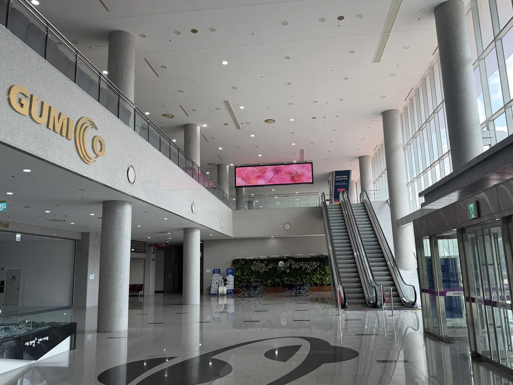
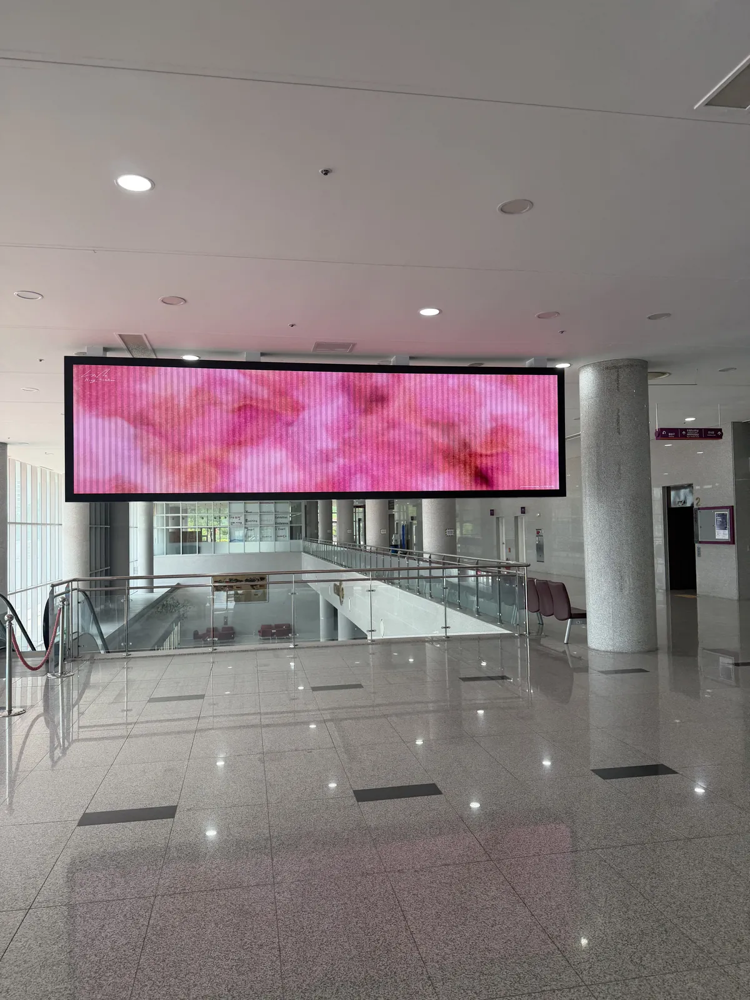
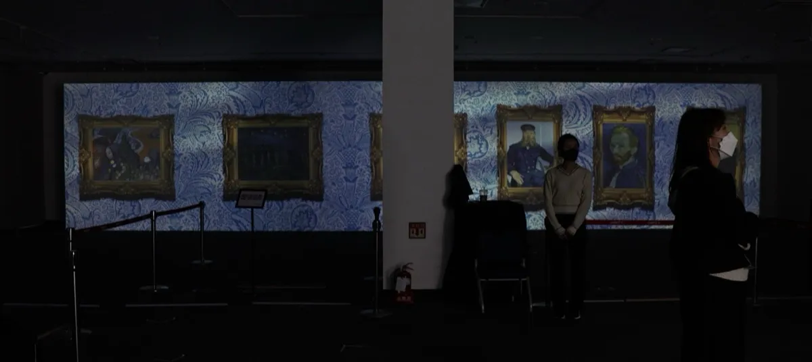

Media Art Subscription
미디어아트 구독 · 매일 다른 작품이 화면에
미디어아트 구독으로 매장·로비 화면에 매일 자정 다른 작품이 켜집니다. LED·모니터는 물론 빔프로젝터 1대·2대 맵핑과 색 조절도 화면에서 바로 맞춥니다.
This Season
구독 작품 · 유리 너머의 봄
간유리 너머 그림자와 초록 불빛. 어두운 바탕에 그림자가 또렷해 LED 화면에서 특히 깊게 보입니다. 이음매 없이 끝없이 돌며, 가로·초광폭·세로 화면에 맞춰 나갑니다.
How it works
이렇게 켜집니다
- 구독 신청화면 종류와 대수를 알려 주시면 계정을 등록해 드립니다.
- 한 번 로그인화면 PC에서 오늘은 봄날 TV를 열고 구독한 Google 계정으로 로그인합니다. 로그인은 반년 유지됩니다.
- 화면 맞추기화면 종류를 고르고, 빔이라면 꼭짓점과 색을 맞춥니다. 설정은 그 기계에 저장됩니다.
- 그다음은 그대로전원만 켜 두면 매일 자정 다음 작품으로 넘어갑니다.
오늘은 봄날 TV 열기구독한 Google 계정으로 로그인 · 화면 PC에서 여세요
Screens
화면 종류별로 맞춥니다
| LED · 모니터 | 화면을 꽉 채움 · 밝기·대비·채도·색온도 조절 |
|---|---|
| 빔프로젝터 1대 | 꼭짓점 맞춤 · 창문·기둥 자리 가리개 · 색 조절 |
| 빔프로젝터 2대 | 겹치는 부분을 녹여 한 화면으로 · 두 영상 시간 자동 맞춤 · 화면마다 꼭짓점과 색 따로 |
| 인터넷이 없는 곳 | 작품을 담은 USB 플레이어로 같은 구독 |
화면이 아직 없다면 행사용은 대구 LED 패널 렌탈·미디어아트 박스 대여, 상설은 LED 패널 · 전광판 설치·미디어파사드 설치를 보세요. 데이터로 움직이는 작품은 공공 API 미디어아트 연동으로 만듭니다.
On Site
실제 공간에서는 이렇게 걸립니다
로비와 매장 화면에 실제로 상영 중인 작품 사진입니다.



FAQ
자주 묻는 질문
미디어아트 구독료는 얼마인가요?
화면 수와 종류(LED·모니터, 빔프로젝터 1대, 빔프로젝터 2대 맵핑)에 따라 다릅니다. 구독 문의에 화면 크기와 대수를 적어 주시면 바로 견적을 드립니다.
어떤 기기가 필요한가요?
크롬이나 엣지가 돌아가는 PC(미니 PC 포함) 한 대와 HDMI로 연결된 화면이면 됩니다. 빔프로젝터 2대 맵핑에는 HDMI 출력이 두 개인 미니 PC를 권합니다. 장비가 없으시면 함께 준비해 드립니다.
작품은 얼마나 자주 바뀌나요?
매일 자정(서울 기준)에 바뀝니다. 바뀔 때도 검은 화면 없이 겹쳐 넘어갑니다. 작품은 계속 늘어나며 AI 영상 작품도 들어갑니다.
빔프로젝터 화면이 벽에 비뚤게 맞는데 괜찮나요?
괜찮습니다. 네 꼭짓점을 끌어 벽 모양에 맞추고, 창문·기둥 자리는 가리개로 가립니다. 빔프로젝터 2대는 겹치는 부분을 녹여 한 화면으로 잇고, 프로젝터마다 다른 색은 밝기·대비·채도·색온도로 맞춥니다.
인터넷이 끊기면 화면이 꺼지나요?
꺼지지 않습니다. 잠시 끊겨도 돌던 작품은 계속 돌고, 멈추면 스스로 다시 띄웁니다. 인터넷이 없는 곳은 USB 플레이어로 같은 구독을 받습니다.
매장이나 공공장소에서 틀어도 되나요?
네. 구독 작품은 매장, 로비, 전시장 상영용으로 만든 오늘은 봄날의 창작물입니다. 구독 기간 동안 해당 공간에서 자유롭게 트시면 됩니다.
구독료는 구독 문의로 답신드립니다.